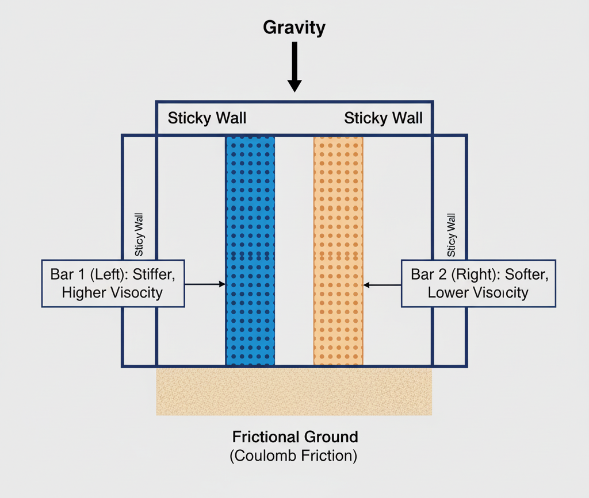
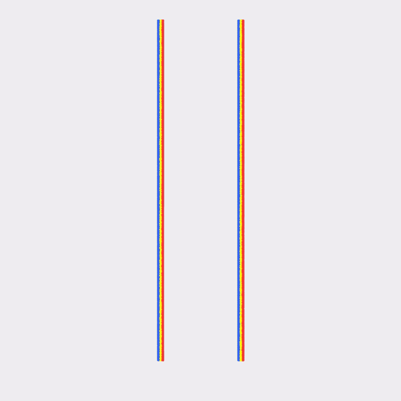

2D Viscoplastic Bars
*Author of this section: Žiga Kovačič, Cornell University
This chapter presents the implementation of a viscoplastic material model using the St. Venant-Kirchhoff (StVK) elasticity model. The viscoplastic model extends traditional plasticity by incorporating rate-dependent behavior, where the material's resistance to permanent deformation depends on how quickly it is being deformed. This makes it suitable for simulating materials like toothpaste, clay, or highly viscous fluids.
Unlike standard rate-independent plasticity, viscoplastic materials exhibit a yield stress that increases with plastic strain rate. This means materials deform more readily under slower loading, while offering greater resistance under rapid deformation—characteristic of viscous fluid-like behavior.
St. Venant-Kirchhoff Elasticity Model
The viscoplastic model is built on top of the St. Venant-Kirchhoff (StVK) elasticity model, formulated in logarithmic (Hencky) strain space. The StVK model computes stress from the log strain using the SVD of the deformation gradient.
Given a deformation gradient with SVD , the log strain is defined as:
The deviatoric log strain is:
where is the spatial dimension and is the trace of the log strain. Intuitively, the deviatoric part removes the pure volumetric component of the log strain and keeps only the distortional part. The term represents an equal expansion or compression in all directions, since measures the total logarithmic volume change. Subtracting this isotropic part leaves a trace-free tensor that captures only changes in shape, not volume.
The deviatoric stress (Cauchy stress deviator) in StVK formulation is:
where is the shear modulus. The stress is computed in the principal frame and then rotated back to the material frame using the SVD basis.
Rate-Dependent Plasticity Model
The viscoplastic model is formulated in log-strain space using the SVD of the deformation gradient, similar to the Drucker-Prager model. The key difference is that the yield condition now includes a rate-dependent term.
The yield function checks if the deviatoric stress magnitude exceeds the rate-dependent yield stress:
where the yield stress depends on the plastic strain rate:
Here, is the static yield stress and is the plastic viscosity coefficient.
Viscoplastic Return Mapping
When , the material yields and we apply viscoplastic return mapping. The viscous resistance is incorporated through a denominator term that depends on the plastic viscosity and time step:
where is a modified shear modulus based on the trial configuration.
The corrected stress magnitude is computed as:
This effectively reduces the stress correction by a factor proportional to the viscous resistance, making the material more resistant to rapid deformation.
The viscoplastic return mapping is implemented using SVD and log strain:
@ti.func
def viscoplastic_return_mapping_stvk_2d(F_trial, mu_p, lam_p, yield_stress_p, plastic_viscosity_p, dt_val):
U, sig, V = ti.svd(F_trial)
sig0 = ti.max(sig[0, 0], 0.01)
sig1 = ti.max(sig[1, 1], 0.01)
epsilon = ti.Vector([ti.log(sig0), ti.log(sig1)])
trace_epsilon = epsilon[0] + epsilon[1]
epsilon_hat = epsilon - ti.Vector([trace_epsilon / 2.0, trace_epsilon / 2.0])
s_trial = 2.0 * mu_p * epsilon_hat
s_trial_norm = s_trial.norm()
y = s_trial_norm - ti.sqrt(2.0 / 3.0) * yield_stress_p
F_result = F_trial
if y > 0:
b_trial = sig0 * sig0 + sig1 * sig1
mu_hat = mu_p * b_trial / 2.0
denom = 1.0 + plastic_viscosity_p / (2.0 * mu_hat * dt_val)
s_new_norm = s_trial_norm - y / denom
s_scale = s_new_norm / s_trial_norm if s_trial_norm > 1e-10 else 1.0
s_new = s_scale * s_trial
epsilon_new = 1.0 / (2.0 * mu_p) * s_new + ti.Vector([trace_epsilon / 2.0, trace_epsilon / 2.0])
sig_elastic = ti.Matrix([[ti.exp(epsilon_new[0]), 0.0], [0.0, ti.exp(epsilon_new[1])]])
F_result = U @ sig_elastic @ V.transpose()
return F_result
The return mapping computes the log strain from the SVD, extracts the deviatoric component, checks the yield condition, and if yielding occurs, applies a viscous correction that reduces the stress update. The corrected strain is then exponentiated and used to reconstruct the elastic deformation gradient.
Two-Bar Simulation Setup
The simulation initializes two vertical bars side-by-side with different material properties to demonstrate how viscoplastic behavior depends on yield stress and plastic viscosity:
# Material parameters for viscoplastic bars
E_toothpaste = 350.0
mu_toothpaste = E_toothpaste / (2 * (1 + nu))
lam_toothpaste = E_toothpaste * nu / ((1 + nu) * (1 - 2 * nu))
# Bar 1 (Left): Higher yield stress and viscosity - stiffer, more resistant
bar1_yield_stress = 1000.0
bar1_plastic_viscosity = 500.0
# Bar 2 (Right): Lower yield stress and viscosity - softer, more fluid-like
bar2_yield_stress = 100.0
bar2_plastic_viscosity = 50.0
The viscoplastic material is identified by material[p] == 3, and the return mapping is applied during the particle update:
if material[p] == 3:
F[p] = viscoplastic_return_mapping_stvk_2d(
F_trial, mu_toothpaste, lam_toothpaste, yield_stress[p], plastic_viscosity[p], dt
)
As the simulation progresses under gravity, the rate-dependent behavior becomes apparent: faster deformation is resisted more strongly due to the viscous term, while slower deformation flows more readily.
The stress computation for viscoplastic materials uses the StVK formulation:
@ti.func
def stvk_stress_2d(F_elastic, U, V, sig, mu_p, lam_p):
sig0 = ti.max(sig[0, 0], 0.01)
sig1 = ti.max(sig[1, 1], 0.01)
epsilon = ti.Vector([ti.log(sig0), ti.log(sig1)])
log_sig_sum = ti.log(sig0) + ti.log(sig1)
ONE = ti.Vector([1.0, 1.0])
tau = 2.0 * mu_p * epsilon + lam_p * log_sig_sum * ONE
tau_mat = ti.Matrix([[tau[0], 0.0], [0.0, tau[1]]])
return U @ tau_mat @ V.transpose() @ F_elastic.transpose()
This function computes the first Piola-Kirchhoff stress from the elastic deformation gradient using the StVK model in Hencky strain space, accounting for both deviatoric and volumetric terms.

Simulation Results
The complete viscoplastic implementation demonstrates realistic rate-dependent behavior through the StVK-based viscoplastic model. The simulation clearly shows how different material properties affect deformation behavior.

In the simulation, we observe that:
- Bar 1 (left) collapses more slowly and maintains more of its vertical shape due to its higher yield stress (1000.0) and plastic viscosity (500.0), behaving like a stiffer, more solid-like viscoplastic material.
- Bar 2 (right) collapses faster and spreads horizontally more quickly due to its lower yield stress (100.0) and plastic viscosity (50.0), behaving more like a fluid-like viscoplastic material.
These differences highlight how viscoplastic materials exhibit rate-dependent behavior—materials with higher viscosity resist rapid deformation more strongly, while materials with lower viscosity flow more readily under the same loading conditions.